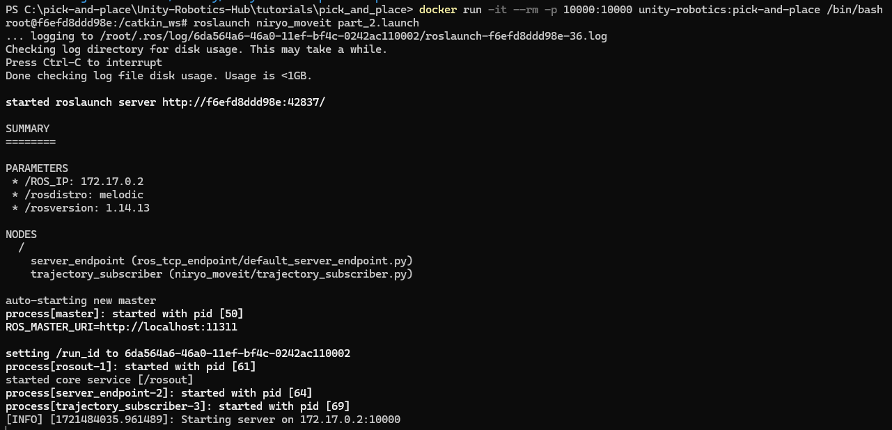

Robotic Arm Quiz 1 Link: https://forms.gle/ne3W5yeYQXg3qD6dA
Robotic Arm Quiz 2 Link: https://forms.gle/BncFYfWJ7WwdEGg96
Robotic Arm Quiz 3 Link: https://forms.gle/7mT8C6gUyXerNXDt9
Essay: In 2 paragraphs, explain the components and functions of a robotic arm, explore its applications in various fields, and discuss the potential advancements and challenges in robotic arm technology.
Run the Autonomous Mode
Hint: Once you have finished downloading the necessary apps and setting up your environment, read and understand the autonomous mode to be able to use it.
